IOS · Freunde


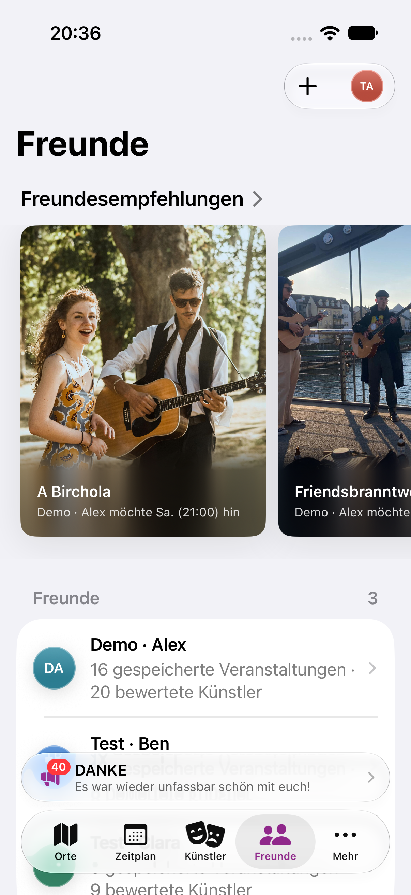
Die zuvor auf Sketch-Maße zugeschnittenen Systemelemente wurden vereinfacht: SwiftUI-Toolbar und Formulare auf iOS, Material-Menüs und Schriftrollen auf Android. Feste Leerflächen, Menüverschiebungen und Eingriffe in native Mindestzeilenhöhen entfallen.
Je acht Zustände, Deutsch und helle Darstellung. Reale Entwicklungskonten; wechselnde Nachrichten und Profilfarben sind Datenunterschiede. Die Screenshots zeigen die tatsächlich gerenderten Komponenten. Prüfumfang und Ergebnisse


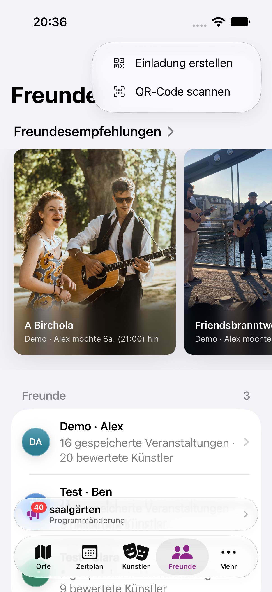

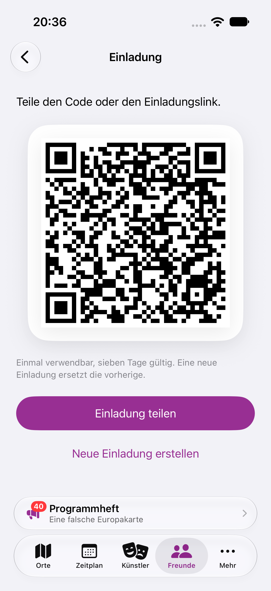

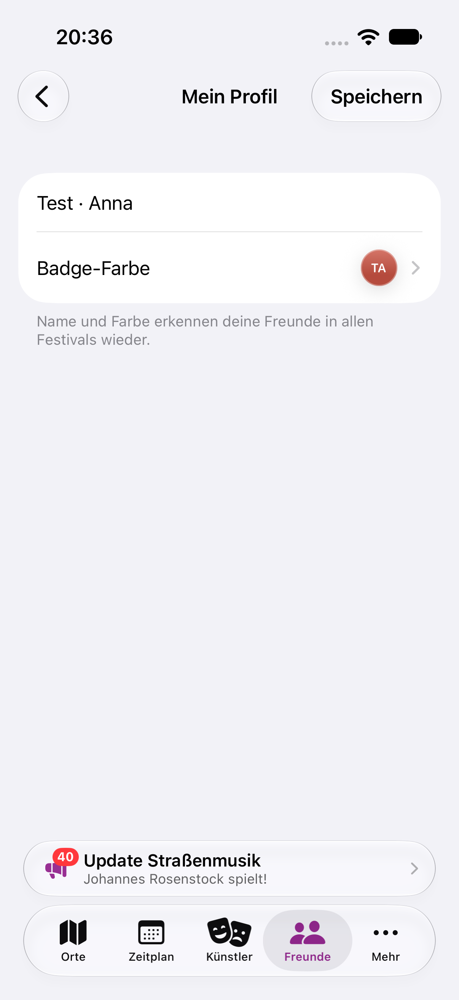

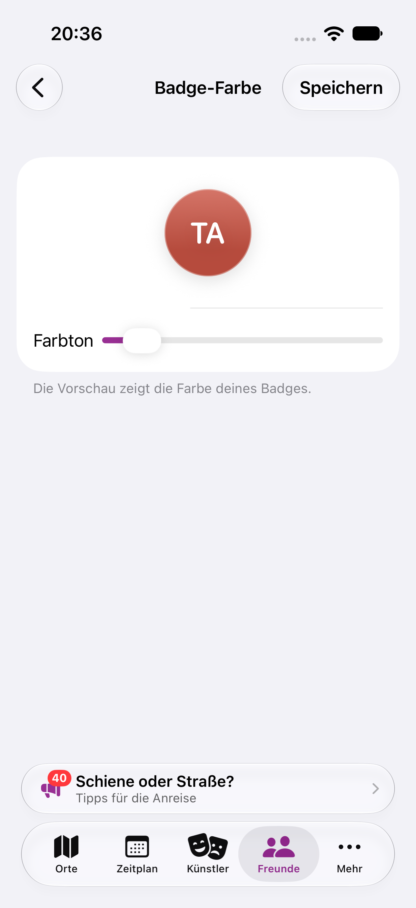

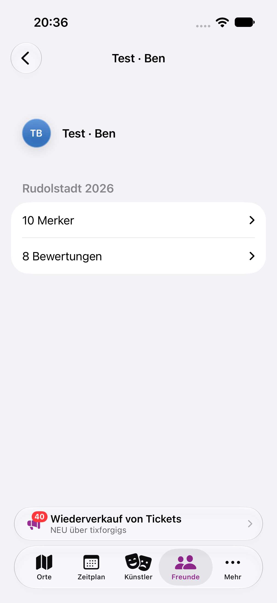

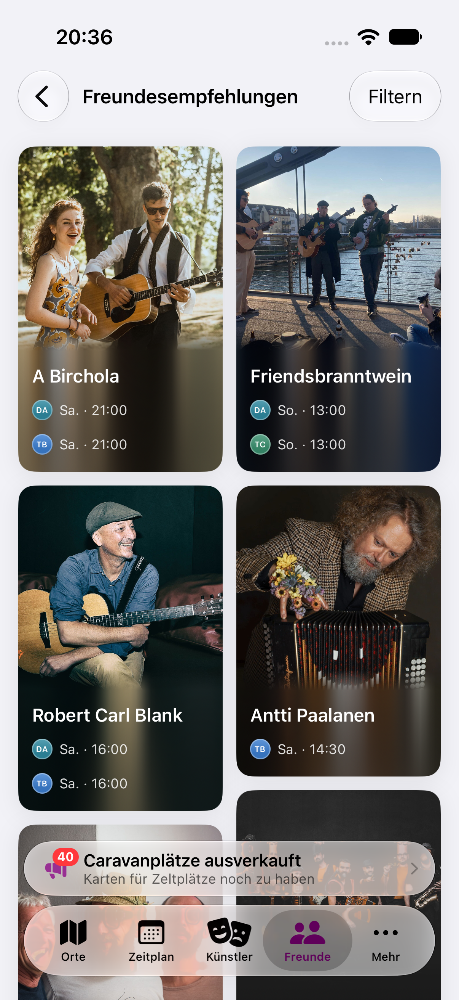

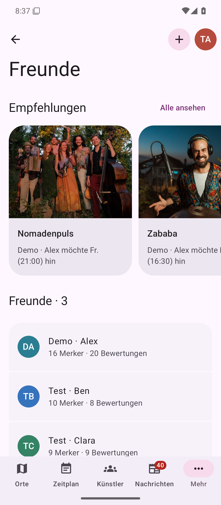

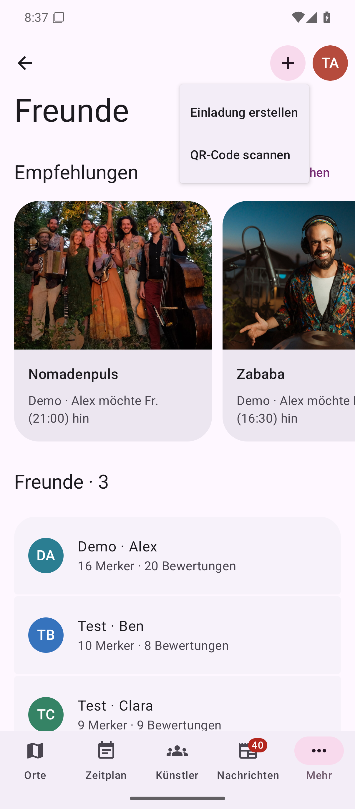
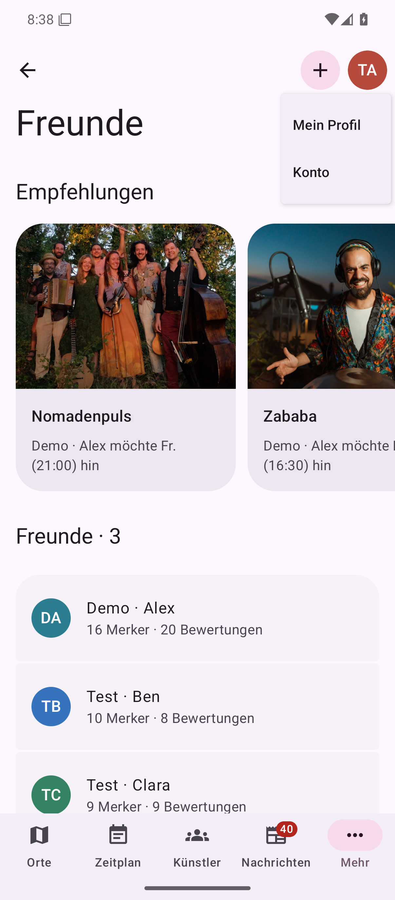

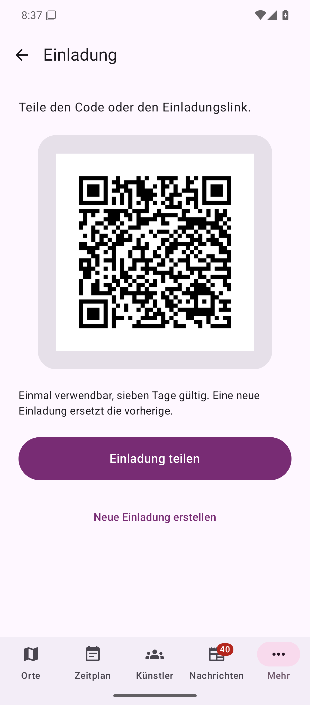

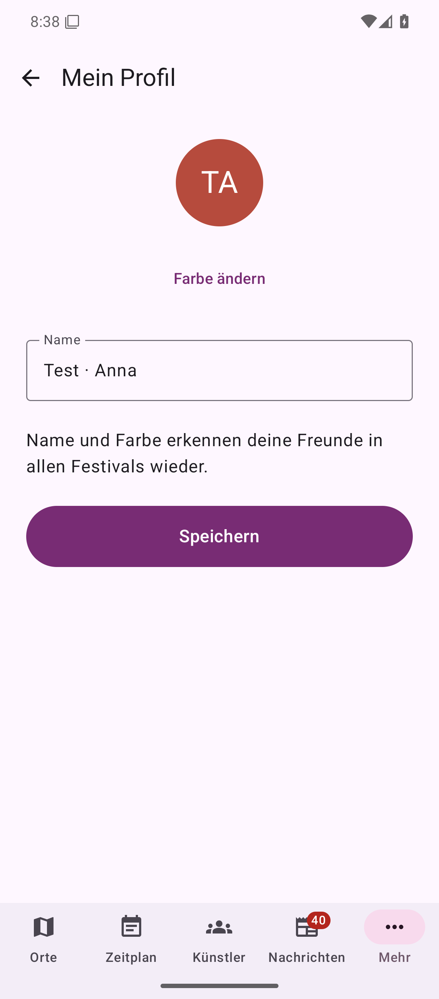

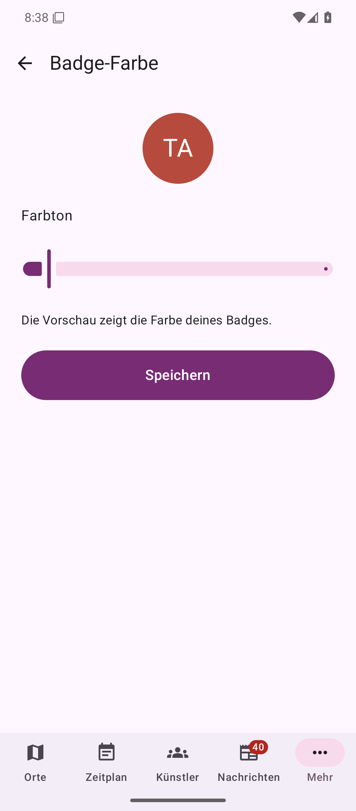

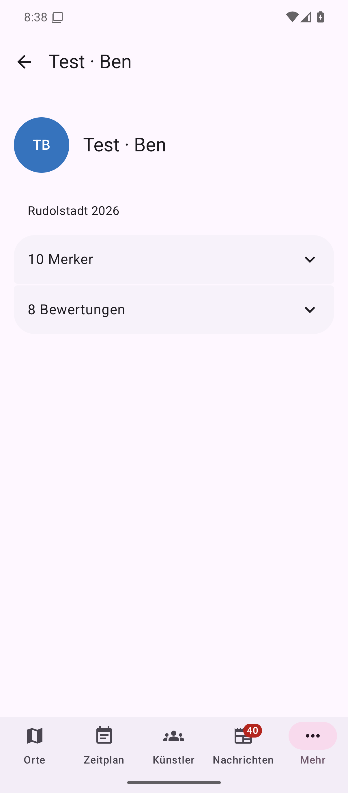

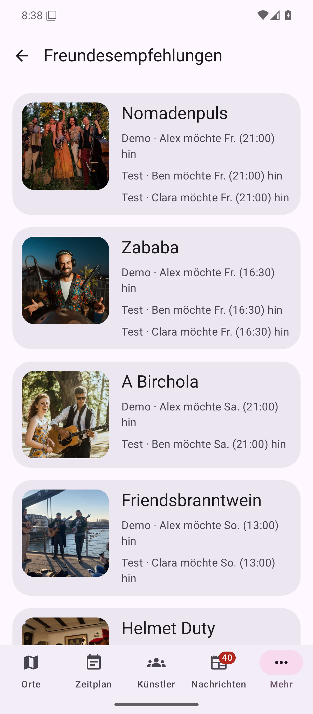